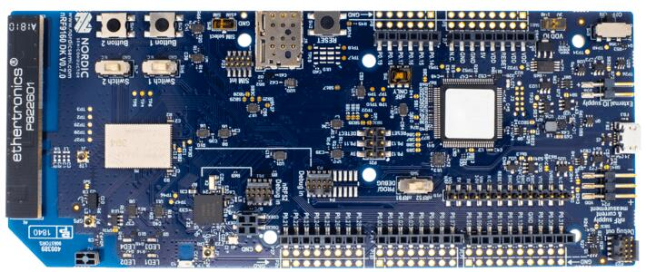

nRF9160 DK
nRF9160 DK
概述
nRF9160 DK（PCA10090）是一款单板开发套件，用于评估和开发支持 LTE-M 和 NB-IoT 的 nRF9160 SiP。nrf9160dk/nrf9160 开发板配置为带 ARMv8-M 安全扩展的 Nordic Semiconductor nRF9160 ARM Cortex-M33F CPU 提供支持。

有关该开发板的更多信息，请访问 nRF9160 DK website [2]。nRF9160 Product Specification [5] 中包含处理器的信息和数据手册。
硬件
nRF9160 DK 有两个外部振荡器。低速时钟频率为 32.768 kHz，主时钟频率为 32 MHz。
支持的功能
nrf9160dk 开发板支持下列硬件功能。
说明
The list of supported hardware features was not generated. Run a full documentation build for the required metadata to be available.
v0.14.0 及更高版本中的附加硬件
从 v0.14.0 开始，DK 上提供了以下附加硬件：
外部 Flash 存储器（MX25R6435F，64 Mb）
I/O 扩展器（PCAL6408A），可用于连接 LED、拨动开关和按键
要使用这些附加硬件，请在构建应用程序时指定要使用的开发板版本（更多信息请参阅 为开发板版本构建）。例如，为 nRF9160 DK v1.0.0 构建：
使用 west：
west build -b nrf9160dk/nrf9160@1.0.0
使用 CMake 和 ninja：
mkdir build && cd build
cmake -GNinja -DBOARD=nrf9160dk/nrf9160@1.0.0 ..
ninja
记得还要在 nRF9160 DK - nRF52840 的固件中为这些附加硬件启用路由（参见 开发板控制器固件）。
该开发板的其他硬件功能尚未启用。nRF9160 DK 开发板的完整硬件功能列表请参阅 nRF9160 DK website [2] 和 nRF9160 Product Specification [5]。
连接与 IO
LED
LED1（绿色）= P0.2
LED2（绿色）= P0.3
LED3（绿色）= P0.4
LED4（绿色）= P0.5
安全组件
编程与调试
nrf9160dk/nrf9160 支持 Armv8m 安全扩展，默认在安全状态下启动。
使用 Arm® TrustZone® 构建安全/非安全 Zephyr 应用程序
nRF9160 上的应用程序可以包含一个安全固件镜像和一个非安全固件镜像。安全镜像可以使用 Zephyr 或 Trusted Firmware M [3] （TF-M）构建，非安全固件镜像始终使用 Zephyr 构建。下面介绍这两种方案。
备注
默认情况下，nRF9160 的安全镜像使用 TF-M 构建。
使用 Zephyr 构建安全固件
该过程需要以下步骤：
使用
-DBOARD=nrf9160dk/nrf9160，并在应用程序项目配置文件中设置CONFIG_TRUSTED_EXECUTION_SECURE=y，构建安全 Zephyr 应用程序。使用
-DBOARD=nrf9160dk/nrf9160/ns构建非安全 Zephyr 应用程序。将两个二进制文件合并在一起。
使用 TF-M 构建安全固件
使用 TF-M 构建安全固件镜像、使用 Zephyr 构建非安全固件镜像的过程需要执行以下操作：
使用
-DBOARD=nrf9160dk_nrf9160_ns构建非安全 Zephyr 应用程序。要触发 TF-M 的构建，Zephyr 构建系统要求启用 Kconfig 选项BUILD_WITH_TFM；将 Zephyr 构建为非安全应用程序时，该选项默认启用。Zephyr 构建系统会自动执行以下步骤：将非安全固件镜像作为普通 Zephyr 应用程序构建
构建 TF-M（安全）固件镜像
将输出的二进制文件合并在一起
可选：构建引导加载程序镜像（MCUboot）
备注
根据 TF-M 配置的不同，可能需要为应用程序提供 DTS 覆盖文件，以调整非安全镜像的 Flash 和 SRAM 起始地址及大小。
构建安全/非安全应用程序时，安全应用程序必须设置 IDAU（SPU）配置，允许非安全状态访问非安全应用程序固件用到的所有 CPU 资源。SPU 配置必须在跳转到非安全应用程序之前完成。
构建仅安全（Secure only）应用程序
按常规方式构建 Zephyr 应用程序（参见 构建应用程序 和 运行应用程序），使用 -DBOARD=nrf9160dk/nrf9160。
烧录
按照 Nordic nRF5x Segger J-Link 页面中的说明安装并配置所有必需的软件。更多信息见 烧录。然后按常规方式构建并烧录应用程序（详见 构建应用程序 和 运行应用程序）。
以下以 Hello World 应用程序为例。
首先，运行你常用的终端程序以监听输出。
$ minicom -D <tty_device> -b 115200
将 <tty_device> 替换为 nRF9160 DK 所在的端口。例如，在 Linux 下为 /dev/ttyACM0。
然后按常规方式构建并烧录应用程序。
# From the root of the zephyr repository
west build -b nrf9160dk/nrf9160 samples/hello_world
west flash
调试
请参阅 Nordic nRF5x Segger J-Link 页面，了解如何使用 Segger IC 调试 Nordic 开发板。
nRF9160 DK - nRF52840
概述
nRF9160 DK（PCA10090）硬件上的 nRF52840 SoC 支持 Nordic Semiconductor nRF52840 ARM Cortex-M4F CPU 以及以下设备：
CLOCK
FLASH
GPIO
MPU
NVIC
PWM
RADIO（低功耗蓝牙和 802.15.4）
RTC
Segger RTT（RTT 控制台）
UART
WDT
nRF52840 SoC 与 nRF9160 DK 开发板上的任何 LED、按键、开关和 Arduino 排针都没有连接。不过，可以将 nRF52840 SoC 的部分引脚路由到 nRF9160 SiP。
有关该开发板的更多信息，请访问 Nordic Low power cellular IoT [4] 网站。nRF52840 Product Specification [6] 中包含处理器的信息和数据手册。
硬件
nRF9160 DK 有两个外部振荡器。低速时钟频率为 32.768 kHz，主时钟频率为 32 MHz。
支持的功能
nrf9160dk 开发板支持下列硬件功能。
说明
The list of supported hardware features was not generated. Run a full documentation build for the required metadata to be available.
编程与调试
nrf9160dk/nrf52840 开发板配置的应用程序可以按常规方式构建和烧录（详见 构建应用程序 和 运行应用程序）。
确保 DK 上的 PROG/DEBUG 开关已设置为 nRF52。
烧录
按照 Nordic nRF5x Segger J-Link 页面中的说明安装并配置所有必需的软件。更多信息见 烧录。然后按常规方式构建并烧录应用程序（详见 构建应用程序 和 运行应用程序）。
记得将 DK 上的 PROG/DEBUG 开关设置为 nRF52。
以下是 Hello World 应用程序的示例。
首先，运行你常用的终端程序以监听输出。
$ minicom -D <tty_device> -b 115200
将 <tty_device> 替换为 nRF52840 SoC 所连接的端口。在 Linux 下通常为 /dev/ttyACM1。/dev/ttyACM0 端口连接的是开发板上的 nRF9160 SiP。
然后按常规方式构建并烧录应用程序。
# From the root of the zephyr repository
west build -b nrf9160dk/nrf52840 samples/hello_world
west flash
调试
请参阅 Nordic nRF5x Segger J-Link 页面，了解如何使用 Segger IC 调试 Nordic 开发板。
记得将 DK 上的 PROG/DEBUG 开关设置为 nRF52。
开发板控制器固件
开发板控制器固件是一小段代码，负责将 nRF9160 SiP 的特定引脚路由到 DK 上的不同组件，例如 LED 和按键、接口 MCU 的 UART 接口（VCOMx）以及 nRF52840 SoC 的特定引脚。
备注
在 v0.14.0 之前的 nRF9160 DK 版本中，路由到 DK 上其他组件的 nRF9160 信号无法同时在 DK 连接器上使用。
为 nrf9160dk/nrf52840 编译项目时，开发板控制器固件会被一起编译，并在内核初始化完成后自动运行。
默认情况下，开发板控制器固件会进行以下路由：
nRF9160 引脚 |
路由到 |
|---|---|
P0.26、P0.27、P0.28 和 P0.29 |
VCOM0 |
P0.01、P0.00、P0.15 和 P0.14 |
VCOM2 |
P0.02 |
LED1 |
P0.03 |
LED2 |
P0.04 |
LED3 |
P0.05 |
LED4 |
P0.08 |
开关 1 |
P0.09 |
开关 2 |
P0.06 |
按键 1 |
P0.07 |
按键 2 |
P0.17、P0.18 和 P0.19 |
Arduino 排针 |
P0.21、P0.22 和 P0.23 |
跟踪接口 |
COEX0、COEX1 和 COEX2 |
COEX 接口 |
所有可用路由选项的完整列表请参阅 nRF9160 DK board control section in the nRF9160 DK User Guide [7]。
如果要以不同方式路由上述某些引脚，或启用其他可用的路由选项，请启用或禁用代表提供该路由的模拟开关的设备树节点。
nRF9160 DK 上的模拟开关定义了以下设备树节点：
设备树节点标签 |
模拟开关名称 |
|---|---|
|
nRF91_UART1 (nRF91_APP1) |
|
nRF91_UART2 (nRF91_APP2) |
|
nRF91_LED1 |
|
nRF91_LED2 |
|
nRF91_LED3 |
|
nRF91_LED4 |
|
nRF91_SWITCH1 |
|
nRF91_SWITCH2 |
|
nRF91_BUTTON1 |
|
nRF91_BUTTON2 |
|
nRF_IF0-2_CTRL (nRF91_GPIO) |
|
nRF_IF3-5_CTRL (nRF91_TRACE) |
|
nRF_IF6-8_CTRL (nRF91_COEX) |
为 0.14.0 或更高版本的 DK 构建时，可以使用以下附加节点（有关如何为特定版本的开发板构建，请参阅 为开发板版本构建）：
设备树节点标签 |
模拟开关名称 |
|---|---|
|
nRF_IF9_CTRL |
|
IO_EXP_EN |
|
EXT_MEM_CTRL |
例如，如果要为 nRF9160 引脚 P0.17、P0.18 和 P0.19 启用可选路由，使其分别路由到 nRF52840 引脚 P0.17、P0.20 和 P0.15，请在应用程序的设备树覆盖文件中添加以下内容：
&nrf_interface_pins_0_2_routing {
status = "okay";
};
又如，如果要禁用 VCOM2 引脚的路由，请添加以下内容：
&vcom2_pins_routing {
status = "disabled";
};
目录 boards/nordic/nrf9160dk/dts/nrf52840 和 boards/nordic/nrf9160dk/dts/nrf9160 中提供了一些辅助 .dtsi 文件，可作为配置和使用上述路由的示例。也可以在应用程序相应的设备树覆盖文件中包含它们，以便方便地配置 nRF9160 DK 上 nRF9160 与 nRF52840 之间的信号路由。例如，要在这两颗芯片上都使用 uart1 进行相互通信，请在两侧应用程序的覆盖文件中添加以下行，nRF52840 一侧为：
#include <nrf52840/nrf9160dk_uart1_on_if0_3.dtsi>
nRF9160:
#include <nrf9160/nrf9160dk_uart1_on_if0_3.dtsi>